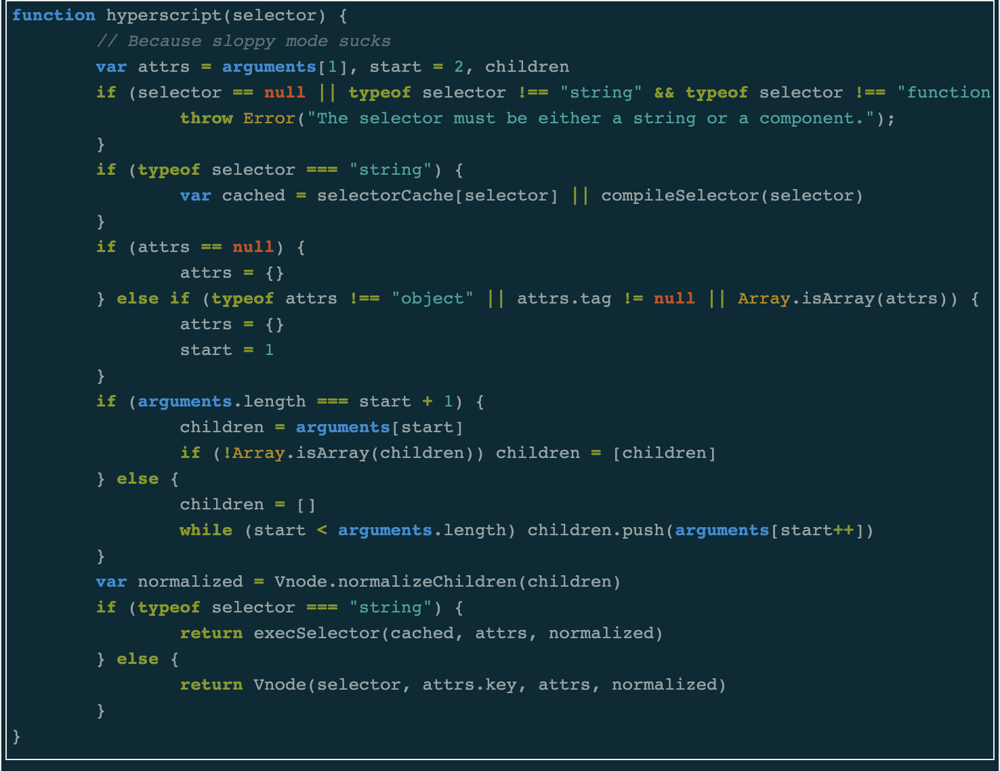

El código

El software es básicamente una serie de instrucciones (en forma de código) que indican al hardware cómo procesar la información para obtener determinados resultados. El software se almacena en las unidades de memoria, e interactúa con la CPU y la Memoria RAM para funcionar. Estrictamente, el software es información pura, algo así como el patrón de los agujeritos de las tablitas del telar de Jacquard.
Estos códigos que dan instrucciones pueden ser de distintos niveles. Un primer nivel de software es lo que se denomina kernel y es el código más básico que se comunica con el hardware, está escrito en binario y para un humano es casi inentendible. En un segundo nivel encontramos al sistema operativo, que es el software intermediario entre el kernel y el usuario. Si bien con un sistema operativo ya podemos usar la computadora para muchas cosas, normalmente necesitamos de un tercer nivel, que está compuesta por las piezas de software normalmente llamamos programas y son aquellos softwares que se comunican con el sistema operativo para realizar tareas específicas, como escribir un documento de texto, o procesar una imagen.
El software, es básicamente código (es decir, texto), que da instrucciones y permite hacer cosas. A la acción de escribir estas instrucciones las llamamos programación, y los distintos "idiomas" con los que podemos programar, los llamamos lenguajes de programación. Existen distintos lenguajes, cada uno tiene sus pros y sus contras dependiendo qué es lo que se quiere hacer.
Ahora bien, siendo que el software es básicamente un código textual, esto quiere decir que podríamos leer el código de cualquier programa que tengamos en nuestra computadora, o incluso el código del sistema operativo. Así sucedió desde los comienzos de la computación, donde la gente compartía sus códigos para hacerlos cada vez más potentes y versátiles. Pero esto cambió cuando los intereses comerciales comenzaron a intervenir en la computación.
Veamos, si algo han facilitado las computadoras es la reproducción automática de información a un costo casi nulo. Si tenemos una manzana y queremos compartirla con nuestra familia, debemos cortarla y cada persona tendrá un pedacito pequeño; pero si tenemos un archivo con una imagen de una manzana, podemos copiarla cuantas veces querramos. Esta capacidad de replicación se contrapone explícitamente a los intereses comerciales de aquellas empresas cuyo producto son la información o los bienes simbólicos (el código de un software, la receta de un medicamento, un libro digital, la composición de un cóctel agroquímico).
Este debate es un hito central en nuestro mundo contemporáneo. Aquí, el interés económico se contrapone de manera explícita a la capacidad de acceso a la información. Es proverbial la anécdota de Bill Gates, que funda su compañía a partir de la compra de un sistema operativo libre en una venta de garage, luego lo patenta, comienza a comercializarlo (alquilando el código, no vendiéndolo) y arranca su cruzada contra aquellas personas que comparten código libremente. Pueden leer una carta de Bill Gates a los hobbystas escrita en 1976 donde muestra sus preocupaciones por el uso libre del código.
En el siguiente video se explica esta idea de la copia digital de manera divertida: